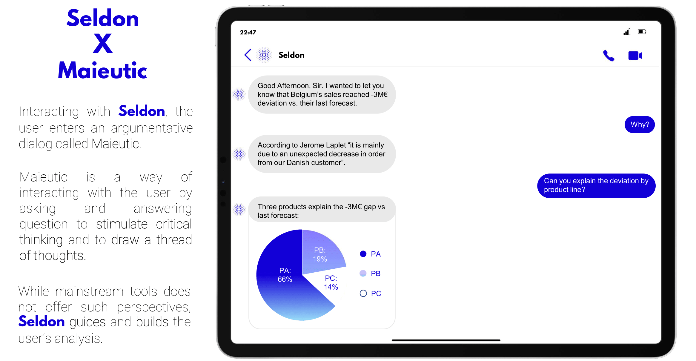
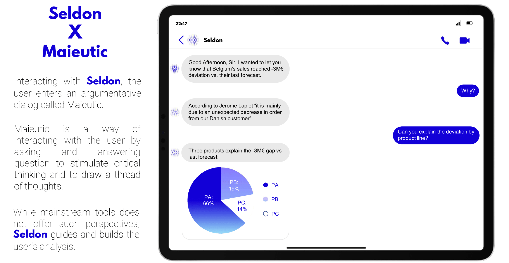
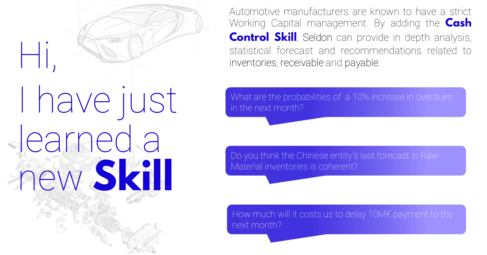
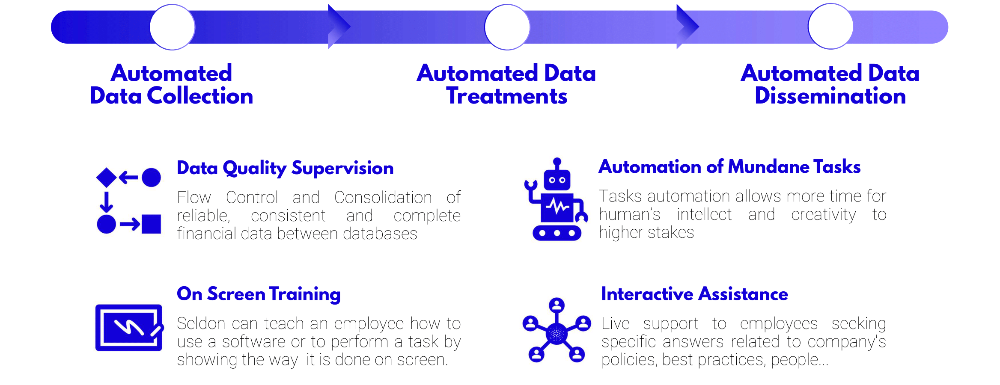
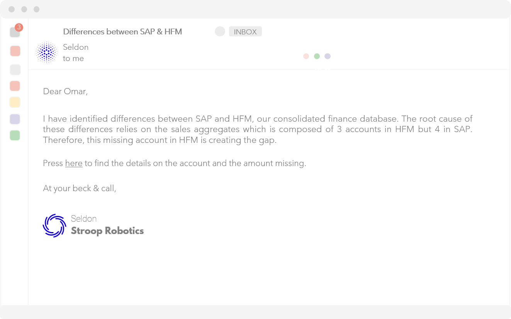
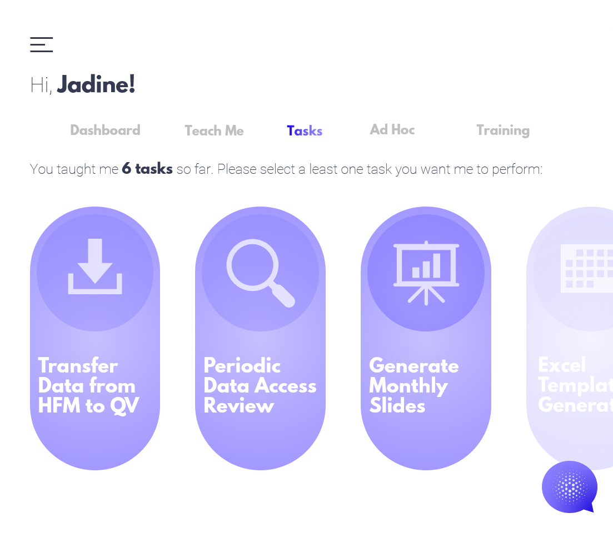
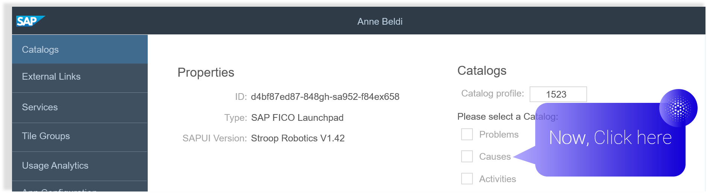
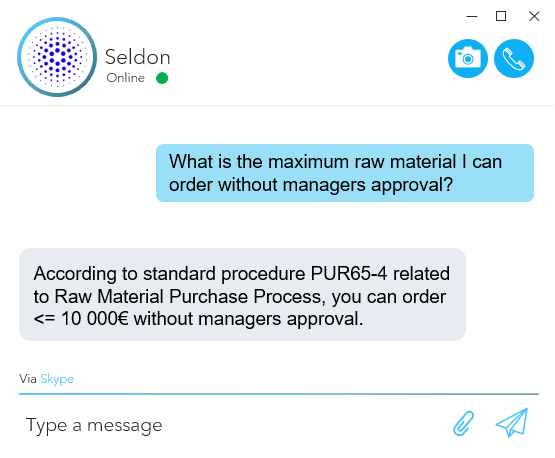

-
On a laptop
-
On a Smartphone
-
At Anytime
-
In Anyplace


 

Seldon's Skills
Seldon can be enhanced by adding him Skills. These skills give more analytical power to the assistant in specific fields of the user's choice.
They are extra features build around the standard offer; like adding options when ordering a new car.
Adding Skills to Seldon shapes a tailor-made virtual agent to satisfy industry and company specific’s needs.
Example of the Seldon’s Skills:
-
Cash Control
-
Capex Vision
-
Plant FLex
-
Supply Chain Flow
Business Case: The Automotive Industry seen by Seldon

Seldon Support
Seldon facilitates the FRA process for Controllers and Financial Analysts. The Assistant executes time consuming-tasks too tedious for humans.
At Stroop Robotics, we believe that no boring tasks should be performed by humans.
This way, Seldon offers you time to focus on more meaningful tasks.

Data Quality Supervision: Seldon keeps databases reliable and consistent
Only a rigorous Data Quality Control can ensure that all entries are properly booked.
These controls require many interactions with accountants, local controllers or operators in the form of email.
Seldon can do this work for the controller in the background without him noticing. The assistant will track every indicators and evaluate their consistency & completeness.
If Seldon finds a mistake, he informs the data owner and ask for correction.

Automation of Boring Tasks
If a task implies a series of repetitive actions following a set of rules depending on identifiable variables, Seldon can do it – and should do it!
Like a macro, the assistant needs to see you performing the task at least one time to learn it.
You can add more complexity to a Task by defining rules and variables. No coding skills are needed, everyone can teach Seldon as many tasks as he wants.
The Assistant adapt to the existing applications by acting the exact same way as an employee, but faster and without mistakes.
Seldon is a Moral Booster. Tedious tasks make us unhappy & unmotivated. At Stroop Robotics, we believe that no boring tasks should be performed by human.
Seldon offers you time to focus on more meaningful tasks.
On Screen Training & Guidance
We never used as many softwares as of today. Employees often find themselves overwhelmed, leaving digital assets under-utilized.
Seldon can train an employee on how to use a software by guiding him on the screen. Seldon enables digital adoption and unlocks the firm potential:
Seldon guides users through any software just like a GPS:

Seldon Interactive Assistance
Seldon can provide live support to employees seeking specific
answers related to company's policies, instructions, or people.
To get all this knowledge, Seldon only needs to be fed by the company’s documentations. He will memorize all the relevant information by himself and retrieve it when needed.
Thanks to this unsupervised learning process, there is no need for people to train Seldon.
This technique saves a tremendous amount of time. In a matter of seconds Seldon gives you an answer that would have took forever to find in the nooks and crannies of lost folders.